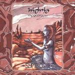

| Artist: | Hydria Spacefolk |
| Title: | Symbiosis |
| Label: | Silence SLC009 |
| Length(s): | 53 minutes |
| Year(s) of release: | 2002 |
| Month of review: | [06/2003] |
| 1) | Terra Hidria | 7.03 |
| 2) | Untitled | 1.39 |
| 2) | Kaneh Bosm | 5.12 |
| 3) | Kaikados | 6.17 |
| 4) | Nasha Universos | 5.15 |
| 5) | Jahwarp | 5.47 |
| 6) | Agents Entropos | 3.12 |
| 7) | 1-Mantra | 5.12 |
| 8) | Pangaia | 11.41 |
Kaneh Bosm is the next one. An extended up-tempo instrumental of keyboards and guitar in the very typical Ozrics style. The same seems to hold for Kaikados, although the band also includes a tension building middle part where the tempo stays high, but the instrumentation goes down in intensity. Then slowly, instruments and volume are added back again. There is some definite marimba like playing and the guitar is a bit rowdier. Again, the music is very groovy and likable.
Nasha Universo is somewhat more relaxed, the sound a bit more woolly. The song also includes quite a bit of panflute, played in a Focus type style, quite up-tempo that is. For the remainder, this is a meandering track, easily to follow and quite light by comparison. The guitar sound is more seventies, and the music can more easily be likened to early seventies psychedelic rock.
With Jahwarp we move into more marimba dominated territories, where also a tinge of jazz (well a big one actually), can be discerned. Later the more usual type of psychedelic rock sets in, but the band knows how to diversify. The rather short Agents Entropos is a repetitive affair revolving around extended guitar soloing. Funny is that they manage to have the guitar sound subdued at points.
I-Mantra opens with fast percussion, seemingly programmed. The keyboard sounds are quite dissonant here. Then straightforward rock sets in with blurpy keyboards accompanying the energetic drums. This is very danceable stuff with some great thematic work on the keyboards hidden between the folds.
The final track is Pangaia, like most other tracks an up-tempo piece, but with some great tension rich and urgent passages. Very filmic, and still up-tempo, a rather rare combination. The song ends with violin.